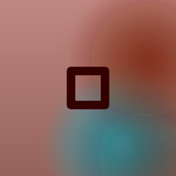

Hold to your heart

trueframe
A camera with no viewfinder and no shutter. Press your iPhone to your chest and it starts shooting.
Press. Feel. Lift.
- Press. Hold the phone to your chest and a burst begins. The screen stays black, facing your shirt.
- Feel. Every photo lands in your hand as a heartbeat, so you never have to look down.
- Lift. The best shots are chosen on your iPhone and are already in your library. The rest are deleted.